Zotero Groups
Video Overview
This great overview video from Georgia State University Library provides an introduction to Zotero Groups, including what they are, how to create them, how to add references to them, how to share them, and how to collaborate on them (Georgia State University Library 2019).
Zotero Groups Considerations
Zotero Groups are a great way to collaborate with others on a research project. However, there are some considerations to keep in mind when using Zotero Groups:
- Privacy: Zotero Groups are public by default, so be sure to set your group to private if you want to keep your references private.
- Storage: Zotero Groups have limited storage space, so be mindful of how many references you add to your group. This will really only be a concern if you wish to include PDF files with your references.
- You can use up to 300MB for free. If you need more space, you can upgrade to a paid plan which are available in 2GB, 6GB, and Unlimited sizes for $20, $60, and $120 per year, respectively.
- Collaboration: Zotero Groups allow for collaboration, but be sure to communicate with your collaborators about who can add, edit, and delete references.
Comprehensive Guide to Zotero Groups
Zotero Groups provide an excellent platform for collaborative research, enabling users to share, organize, and manage references and resources effectively. This tutorial combines best practices, step-by-step instructions, and general recommendations from various trusted resources to help you make the most of Zotero Groups.
Purpose of Zotero Groups
Zotero Groups are designed to facilitate collaboration for:
Students working on group projects
Faculty collaborating across institutions
Research teams sharing resources and references
Any group requiring a centralized space for research materials
Step-by-Step Guide for Zotero Groups
1. Login into your Zotero account
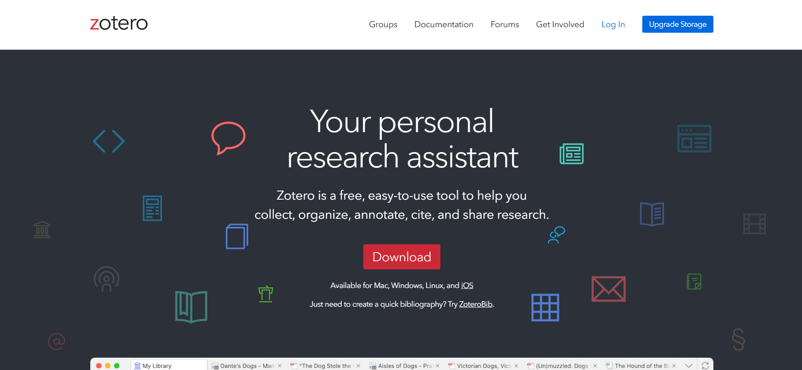
2. Click on “Groups” and then on “Create a new group”

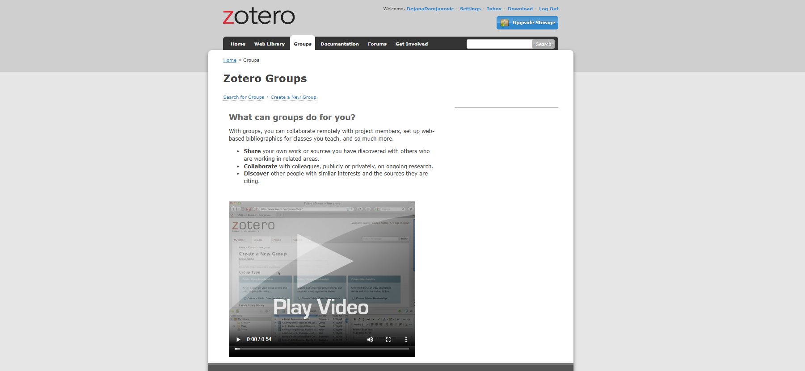
3. Setting Group Details
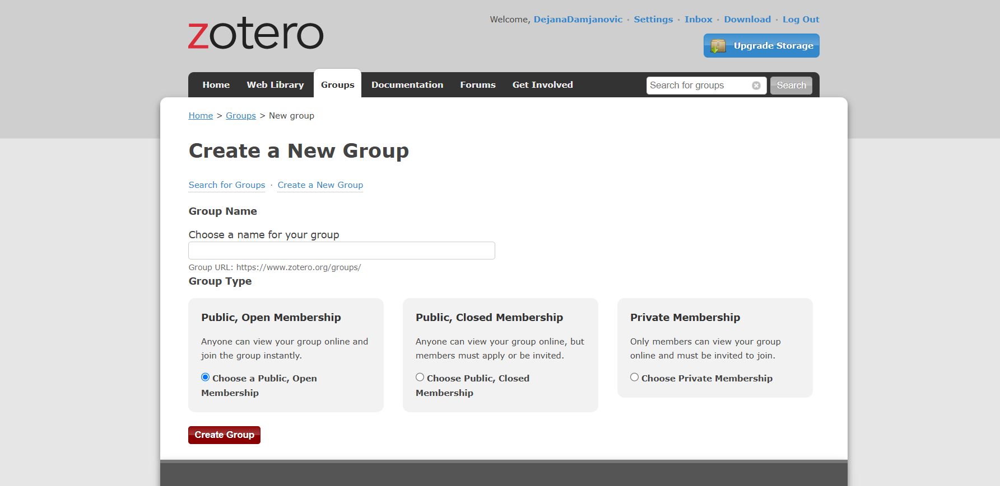
Now you can choose a name for your group and the group type. There are 3 options for the group type:
| Group Type | Access | File Sharing | Best For |
|---|---|---|---|
| Public, Open Membership | Anyone can join and access | Not allowed | Sharing resources publicly |
| Public, Closed Membership | Visible to all, members by invite | Allowed for members | Showcasing work selectively |
| Private Membership | Only invited members can access | Allowed for members | Private or sensitive projects |
4. Adjusting Settings
4.1. Group Settings
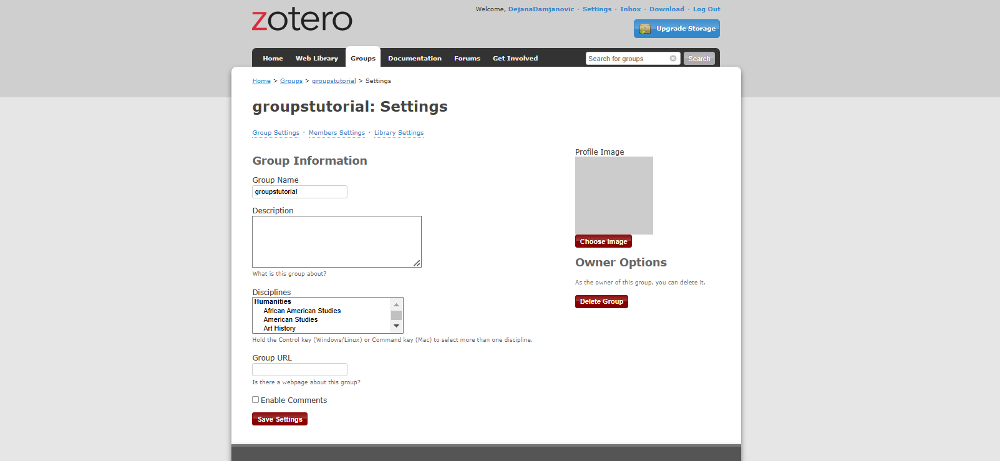
Here you can customize your group by:
Naming the group and providing a description
Selecting a discipline and group type
Adding a profile picture and related URLs
4.2 Members Settings
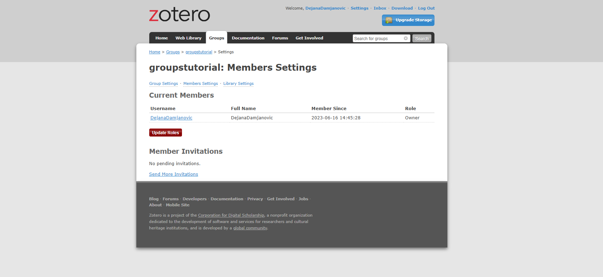
Here you can customize your group by:
Sending member invitations
Transferring group ownership to another member if needed
There are three roles in Zotero Groups:
Regular Members: Can read and edit the library (based on permissions)
Administrators: Can manage group settings, invite members, and adjust permissions
Group Owners: Have full administrative rights, including the ability to delete the group or transfer ownership
4.3 Library Settings
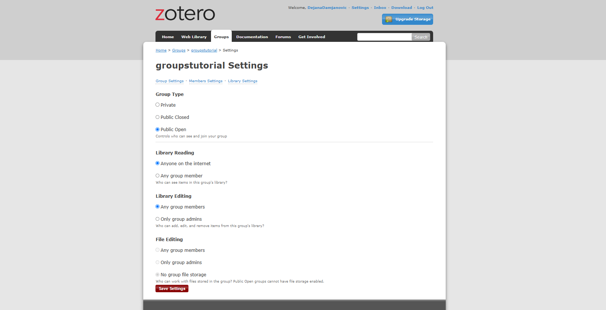
Here you can customize your group by changing the following:
Group Type: Private, Public/Closed, Public/Opened
Library Reading: Control who can view items in the library
Library Editing: Set permissions for adding, editing, and organizing items
File Editing: Enable or restrict file sharing among group members
Interacting with Groups in Zotero Client
Group libraries appear under "Group Libraries" in the Zotero desktop application.
Sync regularly to ensure updates are shared with all members.
Add, edit, and organize items directly within the desktop app.
Best Practices for Zotero Groups
1. Structuring the Library
Inbox for New Items
Create a temporary space or tag for unprocessed materials before adding them to the group library:
In the Zotero desktop app, create a new collection (right-click on your personal library and select “New Collection”).
Name this collection something like “Inbox” or “To Process.”
When saving items to Zotero, apply a tag such as "Unprocessed." You can do this directly when saving an item in your browser or later in the Zotero desktop app.
Filter by this tag later to review and process these items.
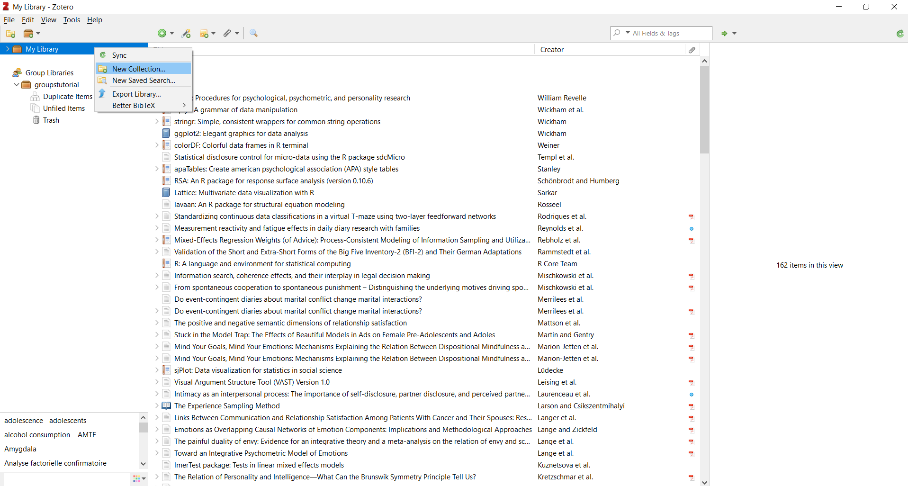
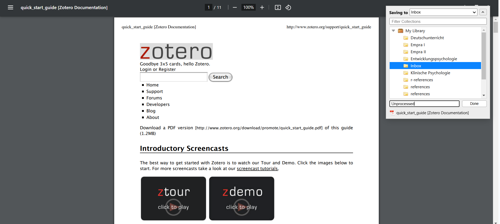
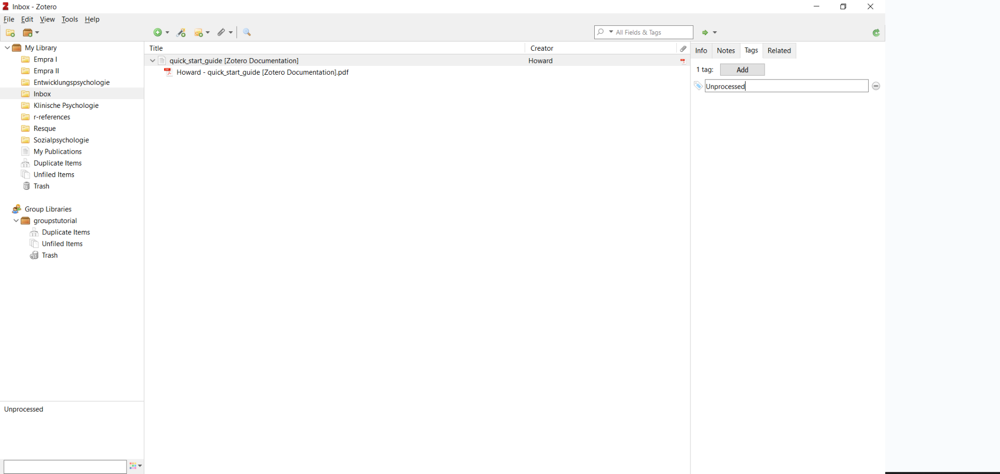
Workflow Notes
Add a standalone note describing group workflows, including tag usage, folder structure, and "related" item definitions:
In your group library, select "New Note" > "Standalone Note" in the toolbar.
Write a clear description of the group workflow, including folder usage, tagging conventions, and definitions for "related" items.
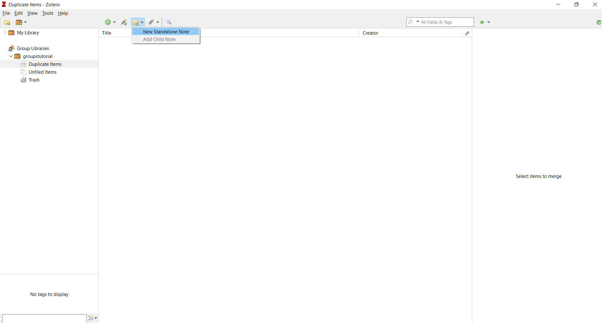
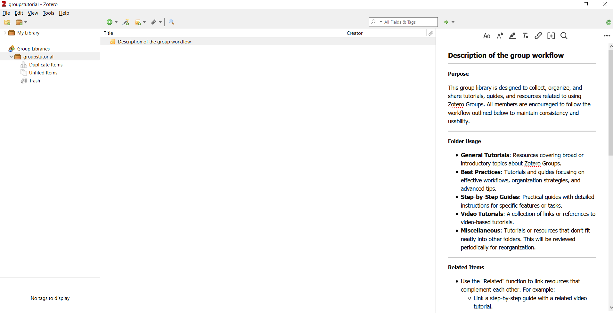
Folder-Specific Notes
In each subfolder (collection), create a standalone note explaining its purpose.
Keep these notes updated to reflect changes in folder usage.
3. Adding and Organizing Resources
Using the Zotero Browser Extension
- Save items directly to the group library by selecting the desired library from the drop-down menu in the browser extension.
Dragging Items
- Drag and drop items from your personal library into the group library.
Organizing Items
- Use tags and sub-collections to categorize and structure resources effectively.